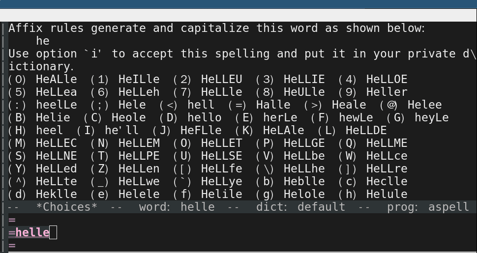
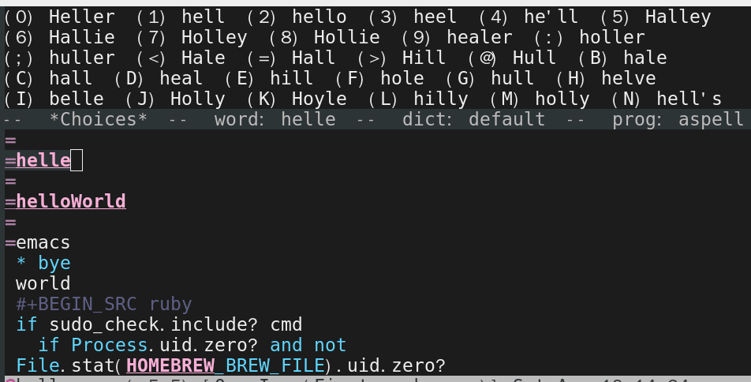
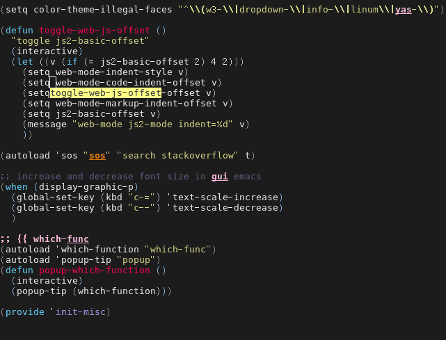
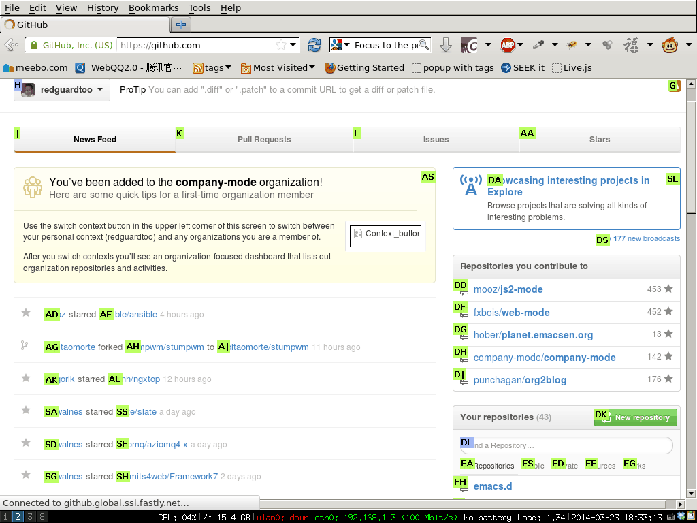
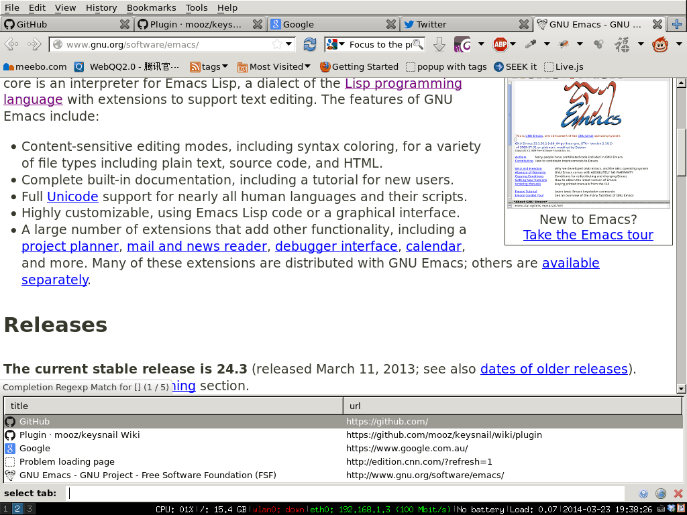

What's the best spell check setup in emacs
UPDATED:
CREATED:
I will show you the minimum spell check setup for programmers and non programmers at first.
Then I will explain why it is better.
Topics covered in official manual (flyspell-mode-predicate, for example) are NOT discussed here.
But you can see my complete setup HERE.
Suggestion for non-programmers
Emacs will find the right dictionary by querying your locale.
Run command "locale" in your shell to get current locale.
If you want to force Emacs use the dictionary "en_US", insert below code into your ~/.emacs:
;; find aspell and hunspell automatically
(cond
;; try aspell at first
((executable-find "aspell")
(setq ispell-program-name "aspell")
(setq ispell-extra-args '("--sug-mode=ultra" "--lang=en_US")))
;; if aspell does NOT exist, use hunspell
((executable-find "hunspell")
(setq ispell-program-name "hunspell")
(setq ispell-extra-args '("-d en_US")))
)
That's it!
Some people prefer hunspell to aspell because hunspell gives better suggestions for typo fix. We can run both in shell to demonstrate that,
echo htink | aspell -a --sug-mode=ultra --lang=en_US
echo htink | hunspell -a
Please run command "man aspell" or "man hunspell" in shell if you have more questions. I've nothing more to say.
Suggestion for programmers
I strongly recommend aspell instead of hunspell (Though hunspell is fine).
Please insert below code into your ~/.emacs:
;; if (aspell installed) { use aspell}
;; else if (hunspell installed) { use hunspell }
;; whatever spell checker I use, I always use English dictionary
;; I prefer use aspell because:
;; 1. aspell is older
;; 2. looks Kevin Atkinson still get some road map for aspell:
;; @see http://lists.gnu.org/archive/html/aspell-announce/2011-09/msg00000.html
(defun flyspell-detect-ispell-args (&optional run-together)
"if RUN-TOGETHER is true, spell check the CamelCase words."
(let (args)
(cond
((string-match "aspell$" ispell-program-name)
;; Force the English dictionary for aspell
;; Support Camel Case spelling check (tested with aspell 0.6)
(setq args (list "--sug-mode=ultra" "--lang=en_US"))
(if run-together
(setq args (append args '("--run-together" "--run-together-limit=5" "--run-together-min=2")))))
((string-match "hunspell$" ispell-program-name)
;; Force the English dictionary for hunspell
(setq args "-d en_US")))
args))
(cond
((executable-find "aspell")
;; you may also need `ispell-extra-args'
(setq ispell-program-name "aspell"))
((executable-find "hunspell")
(setq ispell-program-name "hunspell")
;; Only purpose is to RESET dictionary into the safe "en_US" for hunspell.
;; if we use different dictionary, specify it through `ispell-extra-args'
(setq ispell-local-dictionary "en_US")
(setq ispell-local-dictionary-alist
'(("en_US" "[[:alpha:]]" "[^[:alpha:]]" "[']" nil nil nil utf-8))))
(t (setq ispell-program-name nil)))
;; ispell-cmd-args is useless, it's the list of *extra* arguments we will append to the ispell process when "ispell-word" is called.
;; ispell-extra-args is the command arguments which will *always* be used when start ispell process
(setq-default ispell-extra-args (flyspell-detect-ispell-args t))
;; (setq ispell-cmd-args (flyspell-detect-ispell-args))
(defadvice ispell-word (around my-ispell-word activate)
(let ((old-ispell-extra-args ispell-extra-args))
(ispell-kill-ispell t)
(setq ispell-extra-args (flyspell-detect-ispell-args))
ad-do-it
(setq ispell-extra-args old-ispell-extra-args)
(ispell-kill-ispell t)
))
(defadvice flyspell-auto-correct-word (around my-flyspell-auto-correct-word activate)
(let ((old-ispell-extra-args ispell-extra-args))
(ispell-kill-ispell t)
;; use emacs original arguments
(setq ispell-extra-args (flyspell-detect-ispell-args))
ad-do-it
;; restore our own ispell arguments
(setq ispell-extra-args old-ispell-extra-args)
(ispell-kill-ispell t)
))
(defun text-mode-hook-setup ()
;; Turn off RUN-TOGETHER option when spell check text-mode
(setq-local ispell-extra-args (flyspell-detect-ispell-args)))
(add-hook 'text-mode-hook 'text-mode-hook-setup)
Why
- Aspell
aspell is recommended because its option "–run-together". That option could check the camel case word. Variable name often uses camel case naming convention these days. Read my Effective spell check in Emacs for advanced tips (spell check HTML files).If Emacs start a aspell process with "–run-together" option, that process is not closed so it can be re-used by other commands.
This behavior will be a problem if you want to let Emacs/aspell correct the typo by running the command "ispell-word" because a aspell process with "–run-together" will produce much noise.
For example, for a typo "helle" Emacs will give you too many candidates. It's hard to find the desired word "hello": 
The better solution is before running "M-x ispell-word", we'd better restart a aspell process without the argument "–run-together".
Here is the screen shot after we applying this fix: 
As I mentioned, the global variable "ispell-extra-args" contains arguments Emacs will always append to a spell checker process (aspell or hunspell). That's the only variable you need care about.
There is another variable named "ispell-cmd-args". It is actually some extra arguments Emacs could send to an existing spell checker process when you "M-x ispell-word". In my opinion, it's useless. I mention it because the naming are confusing. "ispell-extra-args" is actually command line arguments the spell checker will always use. The "ispell-cmd-args" are the extra arguments optionally be used.
- Hunspell
I cannot find hunspell option to check camel case words. Please enlighten me if you know the option.Hunspell has some design flaw. It will always check the environment variable LC_ALL, LC_MESSAGES and LANG at first to find the default dictionary unless you specify the dictionary in the command line. If it cannot find the default dictionary, the spell checker process won't start. Aspell does not have this issue, if it cannot find the zh_CN dictionary, it will fall back into English.
Specify the ispell-extra-args won't stop hunspell to search for the default dictionary at the beginning.
For example, I am a Chinese and my locale is "zh_CN.utf-8". So hunspell will always search the dictionary zh_CN. Even I'm only interested in English spell checking.
To specify the dictionary explicitly, I need hack the Emacs code which is kind of mess.
Finally, I figure out,
(setq ispell-program-name "hunspell") ;; below two lines reset the the hunspell to it STOPS querying locale! (setq ispell-local-dictionary "en_US") ; "en_US" is key to lookup in `ispell-local-dictionary-alist` (setq ispell-local-dictionary-alist '(("en_US" "[[:alpha:]]" "[^[:alpha:]]" "[']" nil nil nil utf-8))) ;; Below line specify the ACTUAL dictionary we use (setq ispell-extra-args '("-d en_US"))BTW, you can pass the extra arguments to the hunspell by tweak
ispell-local-dictionary-alist. But I prefer usingispell-extra-args.
FAQ
- How to setup Hunspell
The easiest way is to set up environment variableDICPATH,export DICPATH=/Applications/LibreOffice.app/Contents/Resources/extensions/dict-en:/Applications/LibreOffice.app/Contents/Resources/extensions/dict-es hunspell -D # list available/loaded dictionaries
How to embed button in wxDataViewListCtrl
Before creating wxDataViewListCtrl, it's better to detect information about text size so that we can set the column width and height intelligently.
Here is the code:
void GuessRowSize(int* w, int* h) {
//@see http://sourceforge.net/apps/trac/codelite/browser/trunk/LiteEditor/new_build_tab.cpp?rev=5804
// Determine the row height
wxBitmap tmpBmp(1, 1);
wxMemoryDC memDc;
memDc.SelectObject(tmpBmp);
wxFont f = wxSystemSettings::GetFont(wxSYS_ANSI_FIXED_FONT);
int xx, yy;
memDc.GetTextExtent(wxT("Tp"), &xx, &yy, NULL, NULL, &f);
//enough height for ICON
*h=yy<16? 16: yy;
memDc.GetTextExtent("Wp", &xx, &yy, NULL, NULL, &f);
*w=xx/2;
return;
}
wxDataViewListCtrl* ctrl=new wxDataViewListCtrl(parent,-1);
ctrl->Create(parent,id,wxDefaultPosition,wxDefaultSize);
int w,h;
GuessRowSize(&w,&h);
//hard code width may not be good, may be can use w ,h
AppendTextColumn(_T("Column 1"),wxDATAVIEW_CELL_INERT,200 /*width*/);
//must be called after Create()
ctrl->SetRowHeight(h+6);
// well I need provide button render by myself
class wxDataViewMyButtonRenderer: public wxDataViewCustomRenderer, public wxTimer
{
public:
wxDataViewMyButtonRenderer( const wxString &varianttype = wxT("wxString"),
int align = wxDVR_DEFAULT_ALIGNMENT );
virtual bool SetValue( const wxVariant &value );
virtual bool GetValue( wxVariant &value ) const;
virtual bool Render( wxRect, wxDC*, int);
virtual wxSize GetSize() const;
virtual void Notify();
void SetParent(GalleryListView*);
// Implementation only, don't use nor override
virtual bool ActivateCell(const wxRect& rect,
wxDataViewModel *model,
const wxDataViewItem& item,
unsigned int col,
const wxMouseEvent *mouseEvent);
private:
wxString m_value;
bool m_button_clicked;
wxRect m_cell_rect;
GalleryListView* m_parent;
protected:
DECLARE_DYNAMIC_CLASS_NO_COPY(wxDataViewMyButtonRenderer)
};
When user click one row, the ActivateCell is called, we can use some rect detect algorithm to find if the button rect is clicked.
There is no mouse up event handler! So I have to hack, basically start a wxTimer when button clicked and draw the button up effect after about 1 second in Notify(). That's why I ask wxDataViewMyButtonRenderer to inherit from wxTimer.
To draw the button up effect, I need ask the parent wxDataViewListCtrl to refresh itself, so that the button's Render() method has a chance to be called. That's why we need SetParent().
Here is the part of implementation:
bool
wxDataViewMyButtonRenderer::ActivateCell(const wxRect& rect,
wxDataViewModel *model,
const wxDataViewItem& item,
unsigned int col,
const wxMouseEvent *mouseEvent)
{
wxDataViewListStore* store=(wxDataViewListStore*) model;
if ( mouseEvent ) {
if ( !wxRect(GetSize()).Contains(mouseEvent->GetPosition()) ){
return false;
}
wxVariant item_value_pdf;
store->GetValueByRow(item_value_pdf , store->GetRow(item),0);
wxVariant item_value_created;
store->GetValueByRow(item_value_created , store->GetRow(item),1);
m_button_clicked=true;
m_cell_rect=rect;
} else {
wxLogDebug(_T("Sorry, I don't handle keyboard"));
}
return true;
}
bool
wxDataViewMyButtonRenderer::Render( wxRect rect, wxDC *dc, int state )
{
wxLogDebug(_T("Render called"));
// Ensure that the check boxes always have at least the minimal required
// size, otherwise DrawCheckBox() doesn't really work well. If this size is
// greater than the rect size, the checkbox will be truncated but this is a
// lesser evil.
wxSize size = rect.GetSize();
size.IncTo(GetSize());
rect.SetSize(size);
// draw button
if(m_button_clicked==true && rect.Intersects(m_cell_rect)){
//draw the button when clicked
dc->SetBrush(wxBrush(wxColour(65, 150, 65), wxBRUSHSTYLE_SOLID));
dc->SetPen( *wxBLACK_PEN );
dc->DrawRectangle(rect);
// draw button push down effect. since we cannot detect mouse up event, we use
// timer to draw it
const int time_to_button_up=350;
StartOnce(time_to_button_up);
} else {
// draw normal button
dc->SetBrush(wxBrush(wxColour(84, 174, 84), wxBRUSHSTYLE_SOLID));
dc->SetPen( *wxBLACK_PEN );
dc->DrawRectangle(rect);
//draw inner white border
rect.Deflate(1);
dc->SetPen( *wxWHITE_PEN );
dc->DrawRectangle(rect);
}
dc->SetTextForeground(*wxWHITE);
dc->DrawLabel(m_value,wxRect(dc->GetTextExtent(m_value)).CentreIn(rect));
return true;
}
popup function where your cursor is in
Which Func Mode will display the current function name in the mode line.
But I can't use it.
It's because I reduce my mode-line into minimum to make it work with my tiny netbook.
Showing the function in header is also not possible because it conflicts with my color theme.
So I choose to display the function name in a popup.
Insert below code into ~/.emacs,
(autoload 'which-function "which-func")
(autoload 'popup-tip "popup")
(defun copy-yank-str (msg)
(kill-new msg)
(with-temp-buffer
(insert msg)
(shell-command-on-region (point-min) (point-max)
(cond
((eq system-type 'cygwin) "putclip")
((eq system-type 'darwin) "pbcopy")
(t "xsel -ib")
))))
(defun popup-which-function ()
(interactive)
(let ((msg (which-function)))
(popup-tip msg)
(copy-yank-str msg)
))
The extra bonus is "popup-which-function" will also insert the function name into clipboard and kill ring.
The above code need package "popup.el" to be installed.
Screen shot: 
paste string from clipboard into minibuffer in Emacs
First, I find "Alt-Y" is easier to press when paste string into minibuffer than old "Shift+Insert". "Ctrl-V" is not supported in some terminals.
Second, intergrating some command line clipboard tool into Emacs is better than Emacs X clipboard. Command line tool works in any environment. For example, when you log into a remote server with ssh, your local computer could share clipboard with your Emacs in remote shell. Please note in this example, you need using X11 forward over ssh, usually it's already set up on server.
Here is the code:
(defun paste-from-x-clipboard()
(interactive)
(shell-command
(cond
(*cygwin* "getclip")
(*is-a-mac* "pbpaste")
(t "xsel -ob")
)
1)
)
(defun my/paste-in-minibuffer ()
(local-set-key (kbd "M-y") 'paste-from-x-clipboard)
)
(add-hook 'minibuffer-setup-hook 'my/paste-in-minibuffer)
Upload emacs package to marmalade
Thanks to Sebastian Wiesner for providing a python script to upload package to http://marmalade-repo.org/.
sudo pip install requests keyring curl -L https://raw.githubusercontent.com/lunaryorn/dotfiles/master/emacs/bin/marmalade-upload > ~/bin/marmalade-upload && chmod +x ~/bin/marmalade-upload ~/bin/marmalade-upload -h # see help
Please note if the same version already exists on server, I need delete it before uploading.
Use firefox in Emacs way
UPDATED:
CREATED:
I use keysnail. it's a firefox addon to convert firefox into Emacs.
I install keysnail's own plugins "HoK" and "Tanything".
Here are the use cases of keysnail.
Click & Copy the links
Install the HoK.
Insert below code into ~/.keysnail.js:
hook.setHook("PluginLoaded", function () {
if (!plugins.hok) return;
/* HoK 1.3.9+ required */
plugins.hok.pOptions.selector = plugins.hok.pOptions.selector
/* feedly */
+ ", *[data-uri]" + ", *[data-selector-toggle]" + ", *[data-page-action]" + ", *[data-app-action]"
/* google plus */
+ ", *[guidedhelpid]"
/* twitter */
+ ", *[data-item-count]";
});
key.setGlobalKey(["C-c","C-f"], function (aEvent, aArg) {
ext.exec("hok-start-foreground-mode", aArg);
}, "Hok - Foreground hint mode", true);
key.setGlobalKey(["C-c","C-b"], function (aEvent, aArg) {
ext.exec("hok-start-background-mode", aArg);
}, "HoK - Background hint mode", true);
key.setGlobalKey(["C-c","C-y"], function (aEvent, aArg) {
ext.exec("hok-yank-foreground-mode", aArg);
}, "HoK - Background hint mode", true);
key.setGlobalKey(["C-c","C-;"], function (aEvent, aArg) {
ext.exec("hok-start-extended-mode", aArg);
}, "HoK - Extented hint mode", true);
key.setGlobalKey(["C-c", "C-e"], function (aEvent, aArg) {
ext.exec("hok-start-continuous-mode", aArg);
}, "Start continuous HaH", true);
Now I can press "Ctrl-C Ctrl-F" to select the links to click.
The links will be highlighted as below screen shot: 
I can press the highlighted hint to click the link.
Copy the link into clipboard is also easy. I press "C-c C-y" and similar UI will be displayed. I press the hint above to finish the operation.
Copy the text of link
This is my most favorite tool. As a developer, I need copy text of links from bug tracking software and paste it into git commit message frequently.
That's error prone because:
- The links are cluttered so it's hard to select the text of the link without actually clicking the link.
- The web UI of bug tracing system may use some CSS magic. Only part of the text of links are displayed. So it's impossible to select the text at all. For example, JIRA will display file name of "Screenshot 03/05/2014-193024.png" as "Screenshot 03/05/2014…png".
If you use keysnail+HOK, it's as simple as press hot key "C-c ; Y". That's it!
Switch tab
Install the Tanything.
Insert below code into ~/.keysnail.js:
key.setGlobalKey(["C-c", "C-a"], function (ev, arg) {
ext.exec("tanything", arg);
}, "view all tabs", true);
Press "Ctrl-C Ctrl-A", you got below UI: 
Tanything will locate the tab by finding match in web page's title or URL.
My keysnail set up
You can download my ~/.keysnail.js from HERE.
Debug Emacs Lisp code the hard way
I met some issue when using helm several days ago.
With the help from Michael Heerdegen, I can locate the line error message is dumped.
But the problem is I cannot get the backtrace at all.
So I insert some backtrace printing code above that line and "M-x eval-buffer":
(with-output-to-temp-buffer "backtrace-output"
(let ((var 1))
(save-excursion
(setq var (eval '(progn
(1+ var)
(list 'testing (backtrace))))))))
It turns out that some third party package I installed changes the emacs variable "display-buffer-function". I guess that's why the backtrace is blocked. Because backtrace is usually dumped into a backtrace buffer. And backtrace buffer's is actually influenced by the variable.
How to use ctags in Emacs effectively
Exuberant Ctags is a code navigation tool. It supports many language and could be integrated into Emacs well.
Please read EmacsWiki for basic usage.
I will talk about how I manage my ctags.
Basically ctags will produce a index file with file name TAGS. The full path of TAGS will be stored in a global list "tags-table-list".
An example of tags-table-list:
(setq tags-table-list '("~/wxWidgets-master/TAGS" "~/projs/Loris/src/desktop/TAGS"))
Every time we you "M-x find-tag", the TAGS file in above list will be read from the scratch to locate the definition of the symbol under cursor.
Here is my strategy to manage TAGS automatically:
- I hard coded full path of TAGS in .emacs because I usually don't change project path.
- In major mode hook like c++-mode-hook or js2-mode-hook I will check the directory path of current file. If it contains certain string, I suppose the file belong to certain project.
- Then I will create TAGS for that project if needed
- Every time when I save the file, I may update TAGS according to the value of tags-table-list.
Here is the code:
(defun my-project-name-contains-substring (REGEX)
(let ((dir (if (buffer-file-name)
(file-name-directory (buffer-file-name))
"")))
(string-match-p REGEX dir)))
(defun my-create-tags-if-needed (SRC-DIR &optional FORCE)
"return the full path of tags file"
(let ((dir (file-name-as-directory (file-truename SRC-DIR)) )
file)
(setq file (concat dir "TAGS"))
(when (or FORCE (not (file-exists-p file)))
(message "Creating TAGS in %s ..." dir)
(shell-command
(format "ctags -f %s -e -R %s" file dir))
)
file
))
(defvar my-tags-updated-time nil)
(defun my-update-tags ()
(interactive)
"check the tags in tags-table-list and re-create it"
(dolist (tag tags-table-list)
(my-create-tags-if-needed (file-name-directory tag) t)
))
(defun my-auto-update-tags-when-save ()
(interactive)
(cond
((not my-tags-updated-time)
(setq my-tags-updated-time (current-time)))
((< (- (float-time (current-time)) (float-time my-tags-updated-time)) 300)
;; < 300 seconds
;; do nothing
)
(t
(setq my-tags-updated-time (current-time))
(my-update-tags)
(message "updated tags after %d seconds." (- (float-time (current-time)) (float-time my-tags-updated-time)))
)
))
(defun my-setup-develop-environment ()
(when (my-project-name-contains-substring "Loris")
(cond
((my-project-name-contains-substring "src/desktop")
;; C++ project don't need html tags
(setq tags-table-list (list
(my-create-tags-if-needed
(concat (file-name-as-directory (getenv "WXWIN")) "include"))
(my-create-tags-if-needed "~/projs/Loris/loris/src/desktop")))
)
((my-project-name-contains-substring "src/html")
;; html project donot need C++ tags
(setq tags-table-list (list (my-create-tags-if-needed "~/projs/Loris/loris/src/html")))
))))
(add-hook 'after-save-hook 'my-auto-update-tags-when-save)
(add-hook 'js2-mode-hook 'my-setup-develop-environment)
(add-hook 'web-mode-hook 'my-setup-develop-environment)
(add-hook 'c++-mode-hook 'my-setup-develop-environment)
(add-hook 'c-mode-hook 'my-setup-develop-environment)
UPDATE: There is some discussion at Google Plus about using ctags. Kaushal Modi recommended three emacs plugins:
- ctags-update
- etags-table
- etags-select
I tried these three plugins. ctags-update and etags-table duplicate my above elisp code. I prefer my own code because it's simpler and totally controllable. For example, the fact that I need only care about only one global variable tags-table-list makes my code shorter.
But I do like etags-select, it provide better UI for finding tag and I will use it from now on.
Hack wordpress php and make cdnjs.com host js
For jquery.js, see http://rk.md/2012/cdnjs-scripts-without-plugin-wordpress/.
I added below code into bottom of functions.php (Appearance => Editor):
add_action('wp_enqueue_scripts', 'CDNJS_scripts');
function CDNJS_scripts()
{
wp_deregister_script('jquery');
wp_register_script('jquery','http://cdnjs.cloudflare.com/ajax/libs/jquery/1.10.2/jquery.min.js');
wp_enqueue_script('jquery');
}
For js from SyntaxHighlighter Evolved (Plugins => Installed Plugins => Edit):
diff --git a/syntaxhighlighter.php b/syntaxhighlighter.php
index db8c668..e41ec12 100644
--- a/syntaxhighlighter.php
+++ b/syntaxhighlighter.php
@@ -117,30 +117,30 @@ class SyntaxHighlighter {
}
// Register brush scripts
- wp_register_script( 'syntaxhighlighter-core', plugins_url('syntaxhighlighter/' . $this->shfolder . '/scripts/shCore.js'), array(), $this->agshver );
- wp_register_script( 'syntaxhighlighter-brush-as3', plugins_url('syntaxhighlighter/' . $this->shfolder . '/scripts/shBrushAS3.js'), array('syntaxhighlighter-core'), $this->agshver );
- wp_register_script( 'syntaxhighlighter-brush-bash', plugins_url('syntaxhighlighter/' . $this->shfolder . '/scripts/shBrushBash.js'), array('syntaxhighlighter-core'), $this->agshver );
- wp_register_script( 'syntaxhighlighter-brush-coldfusion', plugins_url('syntaxhighlighter/' . $this->shfolder . '/scripts/shBrushColdFusion.js'), array('syntaxhighlighter-core'), $this->agshver );
- wp_register_script( 'syntaxhighlighter-brush-cpp', plugins_url('syntaxhighlighter/' . $this->shfolder . '/scripts/shBrushCpp.js'), array('syntaxhighlighter-core'), $this->agshver );
- wp_register_script( 'syntaxhighlighter-brush-csharp', plugins_url('syntaxhighlighter/' . $this->shfolder . '/scripts/shBrushCSharp.js'), array('syntaxhighlighter-core'), $this->agshver );
- wp_register_script( 'syntaxhighlighter-brush-css', plugins_url('syntaxhighlighter/' . $this->shfolder . '/scripts/shBrushCss.js'), array('syntaxhighlighter-core'), $this->agshver );
- wp_register_script( 'syntaxhighlighter-brush-delphi', plugins_url('syntaxhighlighter/' . $this->shfolder . '/scripts/shBrushDelphi.js'), array('syntaxhighlighter-core'), $this->agshver );
- wp_register_script( 'syntaxhighlighter-brush-diff', plugins_url('syntaxhighlighter/' . $this->shfolder . '/scripts/shBrushDiff.js'), array('syntaxhighlighter-core'), $this->agshver );
- wp_register_script( 'syntaxhighlighter-brush-erlang', plugins_url('syntaxhighlighter/' . $this->shfolder . '/scripts/shBrushErlang.js'), array('syntaxhighlighter-core'), $this->agshver );
- wp_register_script( 'syntaxhighlighter-brush-groovy', plugins_url('syntaxhighlighter/' . $this->shfolder . '/scripts/shBrushGroovy.js'), array('syntaxhighlighter-core'), $this->agshver );
- wp_register_script( 'syntaxhighlighter-brush-java', plugins_url('syntaxhighlighter/' . $this->shfolder . '/scripts/shBrushJava.js'), array('syntaxhighlighter-core'), $this->agshver );
- wp_register_script( 'syntaxhighlighter-brush-javafx', plugins_url('syntaxhighlighter/' . $this->shfolder . '/scripts/shBrushJavaFX.js'), array('syntaxhighlighter-core'), $this->agshver );
- wp_register_script( 'syntaxhighlighter-brush-jscript', plugins_url('syntaxhighlighter/' . $this->shfolder . '/scripts/shBrushJScript.js'), array('syntaxhighlighter-core'), $this->agshver );
- wp_register_script( 'syntaxhighlighter-brush-perl', plugins_url('syntaxhighlighter/' . $this->shfolder . '/scripts/shBrushPerl.js'), array('syntaxhighlighter-core'), $this->agshver );
- wp_register_script( 'syntaxhighlighter-brush-php', plugins_url('syntaxhighlighter/' . $this->shfolder . '/scripts/shBrushPhp.js'), array('syntaxhighlighter-core'), $this->agshver );
- wp_register_script( 'syntaxhighlighter-brush-plain', plugins_url('syntaxhighlighter/' . $this->shfolder . '/scripts/shBrushPlain.js'), array('syntaxhighlighter-core'), $this->agshver );
- wp_register_script( 'syntaxhighlighter-brush-powershell', plugins_url('syntaxhighlighter/' . $this->shfolder . '/scripts/shBrushPowerShell.js'), array('syntaxhighlighter-core'), $this->agshver );
- wp_register_script( 'syntaxhighlighter-brush-python', plugins_url('syntaxhighlighter/' . $this->shfolder . '/scripts/shBrushPython.js'), array('syntaxhighlighter-core'), $this->agshver );
- wp_register_script( 'syntaxhighlighter-brush-ruby', plugins_url('syntaxhighlighter/' . $this->shfolder . '/scripts/shBrushRuby.js'), array('syntaxhighlighter-core'), $this->agshver );
- wp_register_script( 'syntaxhighlighter-brush-scala', plugins_url('syntaxhighlighter/' . $this->shfolder . '/scripts/shBrushScala.js'), array('syntaxhighlighter-core'), $this->agshver );
- wp_register_script( 'syntaxhighlighter-brush-sql', plugins_url('syntaxhighlighter/' . $this->shfolder . '/scripts/shBrushSql.js'), array('syntaxhighlighter-core'), $this->agshver );
- wp_register_script( 'syntaxhighlighter-brush-vb', plugins_url('syntaxhighlighter/' . $this->shfolder . '/scripts/shBrushVb.js'), array('syntaxhighlighter-core'), $this->agshver );
- wp_register_script( 'syntaxhighlighter-brush-xml', plugins_url('syntaxhighlighter/' . $this->shfolder . '/scripts/shBrushXml.js'), array('syntaxhighlighter-core'), $this->agshver );
+ wp_register_script( 'syntaxhighlighter-core', '//cdnjs.cloudflare.com/ajax/libs/SyntaxHighlighter/3.0.83/scripts/shCore.js', array(), $this->agshver );
+ wp_register_script( 'syntaxhighlighter-brush-as3', '//cdnjs.cloudflare.com/ajax/libs/SyntaxHighlighter/3.0.83/scripts/shBrushAS3.js', array('syntaxhighlighter-core'), $this->agshver );
+ wp_register_script( 'syntaxhighlighter-brush-bash', '//cdnjs.cloudflare.com/ajax/libs/SyntaxHighlighter/3.0.83/scripts/shBrushBash.js', array('syntaxhighlighter-core'), $this->agshver );
+ wp_register_script( 'syntaxhighlighter-brush-coldfusion', '//cdnjs.cloudflare.com/ajax/libs/SyntaxHighlighter/3.0.83/scripts/shBrushColdFusion.js', array('syntaxhighlighter-core'), $this->agshver );
+ wp_register_script( 'syntaxhighlighter-brush-cpp', '//cdnjs.cloudflare.com/ajax/libs/SyntaxHighlighter/3.0.83/scripts/shBrushCpp.js', array('syntaxhighlighter-core'), $this->agshver );
+ wp_register_script( 'syntaxhighlighter-brush-csharp', '//cdnjs.cloudflare.com/ajax/libs/SyntaxHighlighter/3.0.83/scripts/shBrushCSharp.js', array('syntaxhighlighter-core'), $this->agshver );
+ wp_register_script( 'syntaxhighlighter-brush-css', '//cdnjs.cloudflare.com/ajax/libs/SyntaxHighlighter/3.0.83/scripts/shBrushCss.js', array('syntaxhighlighter-core'), $this->agshver );
+ wp_register_script( 'syntaxhighlighter-brush-delphi', '//cdnjs.cloudflare.com/ajax/libs/SyntaxHighlighter/3.0.83/scripts/shBrushDelphi.js', array('syntaxhighlighter-core'), $this->agshver );
+ wp_register_script( 'syntaxhighlighter-brush-diff', '//cdnjs.cloudflare.com/ajax/libs/SyntaxHighlighter/3.0.83/scripts/shBrushDiff.js', array('syntaxhighlighter-core'), $this->agshver );
+ wp_register_script( 'syntaxhighlighter-brush-erlang', '//cdnjs.cloudflare.com/ajax/libs/SyntaxHighlighter/3.0.83/scripts/shBrushErlang.js', array('syntaxhighlighter-core'), $this->agshver );
+ wp_register_script( 'syntaxhighlighter-brush-groovy', '//cdnjs.cloudflare.com/ajax/libs/SyntaxHighlighter/3.0.83/scripts/shBrushGroovy.js', array('syntaxhighlighter-core'), $this->agshver );
+ wp_register_script( 'syntaxhighlighter-brush-java', '//cdnjs.cloudflare.com/ajax/libs/SyntaxHighlighter/3.0.83/scripts/shBrushJava.js', array('syntaxhighlighter-core'), $this->agshver );
+ wp_register_script( 'syntaxhighlighter-brush-javafx', '//cdnjs.cloudflare.com/ajax/libs/SyntaxHighlighter/3.0.83/scripts/shBrushJavaFX.js', array('syntaxhighlighter-core'), $this->agshver );
+ wp_register_script( 'syntaxhighlighter-brush-jscript', '//cdnjs.cloudflare.com/ajax/libs/SyntaxHighlighter/3.0.83/scripts/shBrushJScript.js', array('syntaxhighlighter-core'), $this->agshver );
+ wp_register_script( 'syntaxhighlighter-brush-perl', '//cdnjs.cloudflare.com/ajax/libs/SyntaxHighlighter/3.0.83/scripts/shBrushPerl.js', array('syntaxhighlighter-core'), $this->agshver );
+ wp_register_script( 'syntaxhighlighter-brush-php', '//cdnjs.cloudflare.com/ajax/libs/SyntaxHighlighter/3.0.83/scripts/shBrushPhp.js', array('syntaxhighlighter-core'), $this->agshver );
+ wp_register_script( 'syntaxhighlighter-brush-plain', '//cdnjs.cloudflare.com/ajax/libs/SyntaxHighlighter/3.0.83/scripts/shBrushPlain.js', array('syntaxhighlighter-core'), $this->agshver );
+ wp_register_script( 'syntaxhighlighter-brush-powershell', '//cdnjs.cloudflare.com/ajax/libs/SyntaxHighlighter/3.0.83/scripts/shBrushPowerShell.js', array('syntaxhighlighter-core'), $this->agshver );
+ wp_register_script( 'syntaxhighlighter-brush-python', '//cdnjs.cloudflare.com/ajax/libs/SyntaxHighlighter/3.0.83/scripts/shBrushPython.js', array('syntaxhighlighter-core'), $this->agshver );
+ wp_register_script( 'syntaxhighlighter-brush-ruby', '//cdnjs.cloudflare.com/ajax/libs/SyntaxHighlighter/3.0.83/scripts/shBrushRuby.js', array('syntaxhighlighter-core'), $this->agshver );
+ wp_register_script( 'syntaxhighlighter-brush-scala', '//cdnjs.cloudflare.com/ajax/libs/SyntaxHighlighter/3.0.83/scripts/shBrushScala.js', array('syntaxhighlighter-core'), $this->agshver );
+ wp_register_script( 'syntaxhighlighter-brush-sql', '//cdnjs.cloudflare.com/ajax/libs/SyntaxHighlighter/3.0.83/scripts/shBrushSql.js', array('syntaxhighlighter-core'), $this->agshver );
+ wp_register_script( 'syntaxhighlighter-brush-vb', '//cdnjs.cloudflare.com/ajax/libs/SyntaxHighlighter/3.0.83/scripts/shBrushVb.js', array('syntaxhighlighter-core'), $this->agshver );
+ wp_register_script( 'syntaxhighlighter-brush-xml', '//cdnjs.cloudflare.com/ajax/libs/SyntaxHighlighter/3.0.83/scripts/shBrushXml.js', array('syntaxhighlighter-core'), $this->agshver );
// Register some popular third-party brushes
wp_register_script( 'syntaxhighlighter-brush-clojure', plugins_url('syntaxhighlighter/third-party-brushes/shBrushClojure.js'), array('syntaxhighlighter-core'), '20090602' );
How to use org2blog effectively as a programmer
org2blog is a beautiful plugin to post to wordpress blog.
I won't waste your time on the basic usage because it has zero learning curve and its README is very clear.
I will talk some advanced set up here.
As a programmer, I need wordpress syntax highlight all the code snippets I post. But it seems org2blog need some tweak to support language like elisp.
If you grep org2blog's code, you will find a variable "org2blog/wp-sourcecode-langs". It lists all the languages org2blog supports.
So all you need to do is insert below code into ~/.emacs:
(setq org2blog/wp-sourcecode-langs
'("actionscript3" "bash" "coldfusion" "cpp" "csharp" "css" "delphi"
"erlang" "fsharp" "diff" "groovy" "javascript" "java" "javafx" "matlab"
"objc" "perl" "php" "text" "powershell" "python" "ruby" "scala" "sql"
"vb" "xml"
"sh" "elisp" "lisp" "lua"))
Then you need install the wordpress plugin SyntaxHighlighter Evolved to do the syntax highlight thing. Well, you will find the languages like elisp is not supported by this plugin.
That's easy to fix. Please log into your blog, modify that plugin online:
diff --git a/syntaxhighlighter.php b/syntaxhighlighter.php
index 53b4815..808b14b 100644
--- a/syntaxhighlighter.php
+++ b/syntaxhighlighter.php
@@ -222,6 +222,11 @@ class SyntaxHighlighter {
'xslt' => 'xml',
'html' => 'xml',
'xhtml' => 'xml',
+ 'text' => 'clojure',
+ 'elisp' => 'clojure',
+ 'lisp' => 'clojure',
+ 'sh' => 'bash',
+ 'lua' => 'ruby',
) );
As you can see, I use clojure syntax to highlight elisp and use ruby syntax to highlight lua.
You may ask why I use clojure syntax to highlight simple text in above set up?
Well, I already submit lots of my elisp code before set up my org2blog correctly. Those code snippets are regarded as simple text. I won't waste my time to mark those old snippets one by one. That's why I render text as clojure code.
Besides, I find the wordpress theme produced by Automattic (Yes, the company behind wordpress) is good for programmers because they obviously have optimized font size for different screen resolutions. That's important for code reading. I use Trvl v1.0.2.